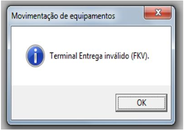
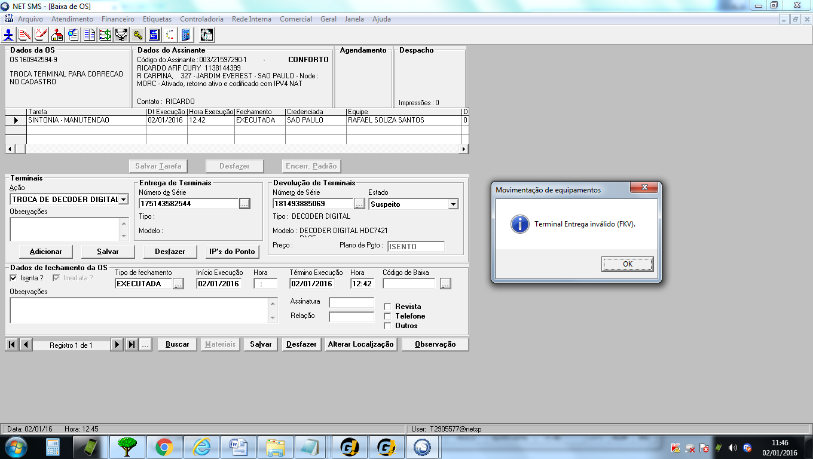

Orientar os colaboradores NET sobre o erro: “Terminal Entrega inválido (FKV).”, ao realizar a movimentação de terminal na tela “Rede Interna >> OS’s >> Baixa de OS’s”, na ferramenta NETSMS.
Essa IT possuí aplicabilidade nos seguintes grupos:
N/A
Quando o usuário informar que, ao tentar efetuar a movimentação de terminal na tela de Baixa de OS’s, após o preenchimento do campo das informações do terminal de entrega e/ou devolução, é apresentada a mensagem de erro “Terminal de Entrega inválido (FKV)”.
Validar no NETSMS se a mensagem de erro apresentada informa ‘Terminal de Entrega inválido (FKV). ’ após preencher o número do série ou endereçável principal do equipamento.
Exemplo de tela de erro:
Devemos realizar as validações nos sistemas HPBT e NETSMS, conforme orientação abaixo:
Consultar as informações do terminal e identificar se os terminais de entrega e devolução possuem a mesma tecnologia.
Essa verificação é realizada por meio do sistema HPBT, seguindo os seguintes passos:
Após o preenchimento irá aparecer a tela abaixo, solicitando os seguintes dados:
Para tal validação, o analista do Service Desk N1, deverá acessar a ferramenta NETSMS e verificar o ponto e produto da OS informada, acessar a aba Produtos do NETSMS.
Após selecionar o ponto e produto desejado, verificar produto da OS desejada conforme imagem abaixo:
Nas OSs de Troca de equipamento sem mudança de produtos os terminais devem possuir a mesma tecnologia do produto instalado no ponto referido na OS.
Exemplo: Digital para Digital, HD para HD ou HD Max para HD Max.
Para o cenário apresentado acima, possuímos a seguinte solução:
Orientar o usuário a realizar a troca de terminais somente de tecnologia iguais e de mesma tecnologia do produto instalado no ponto da OS.
Encerrar o chamado utilizando a categoria abaixo:
| Categoria: | SISTEMAS.NETSMS.OS.TROCA DE TERMINAL EM BAIXA DE OS |
|---|---|
| Grupo: | SERVICE DESK N1 |
Prezados(as),
Conforme análise realizada, a troca de terminais só poderá ser efetivada se forem de tecnologias iguais e de mesma tecnologia do produto instalado no ponto da OS.
Atenciosamente, Service Desk Claro Brasil
N/A
ID do doc: 431717
Data de criação: 05/02/2016
Data de Revisão: 18/10/2018